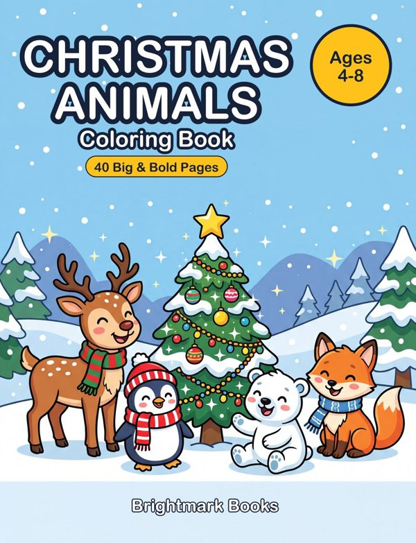

Christmas Animals Coloring Book for Kids Ages 4-8Ages 4-8 · 40 picturesComing November 29
BCover reveal soon
Monster Trucks Coloring Book for Kids Ages 3-6Ages 3-6 · 40 picturesComing November 29
BCover reveal soon
Trains Coloring Book for Toddlers Ages 2-5Ages 2-5 · 40 picturesComing December 6
BCover reveal soon
Santas Workshop and Elves Coloring Book for Kids Ages 2-5Ages 2-5 · 40 picturesComing December 6
BCover reveal soon
Christmas Unicorns, candy canes, snowflakes Coloring Book for Kids Ages 4-8Ages 4-8 · 40 picturesComing December 13
BCover reveal soon
Gingerbread & Christmas Treats Coloring Book for Kids Ages 3-6Ages 3-6 · 40 picturesComing December 13
BCover reveal soon
Christmas Mermaids Coloring Book for Kids Ages 4-8Ages 4-8 · 40 picturesComing December 20
BCover reveal soon
Arctic Christmas Animals Coloring Book for Kids Ages 2-5Ages 2-5 · 40 picturesComing December 20
BCover reveal soon
Garbage & Recycling Trucks Coloring Book for Toddlers Ages 2-5Ages 2-5 · 40 picturesComing December 27
BCover reveal soon
Pug puppies Coloring Book for Kids Ages 4-8Ages 4-8 · 40 picturesComing December 27
BCover reveal soon
Farm Tractors & Machines Coloring Book for Toddlers Ages 2-5Ages 2-5 · 40 picturesComing January 3
BCover reveal soon
Baby Dinosaurs Coloring Book for Toddlers Ages 2-5Ages 2-5 · 40 picturesComing January 3